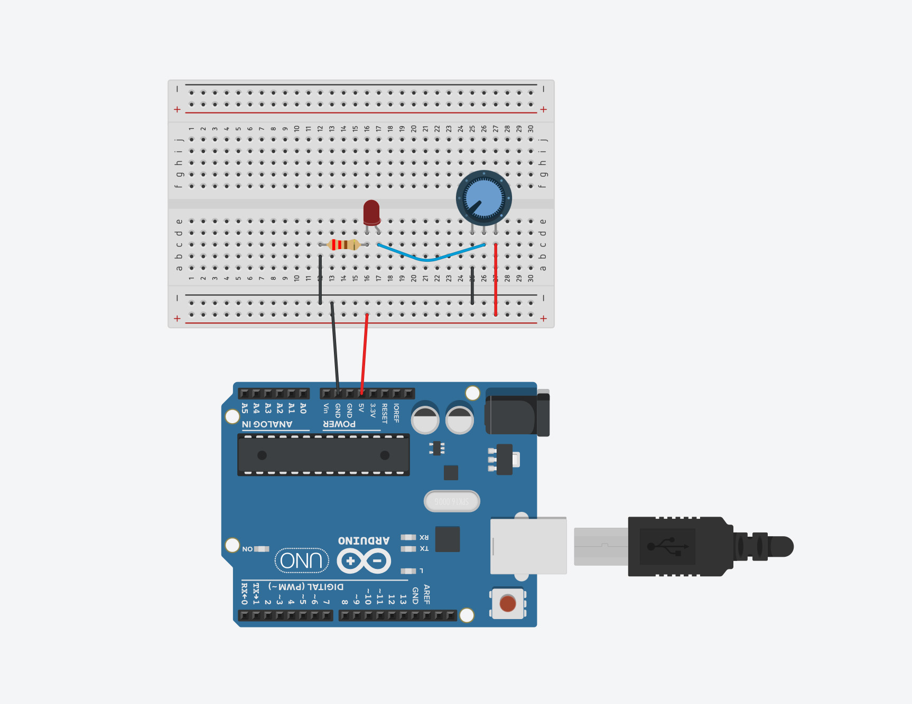
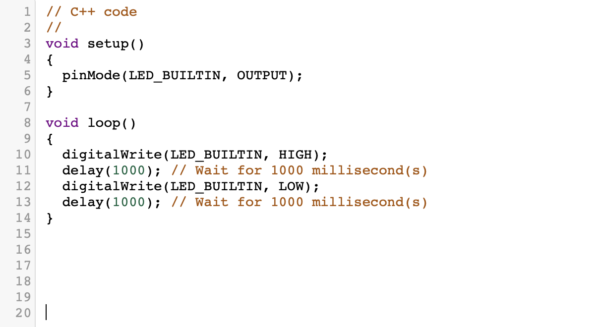
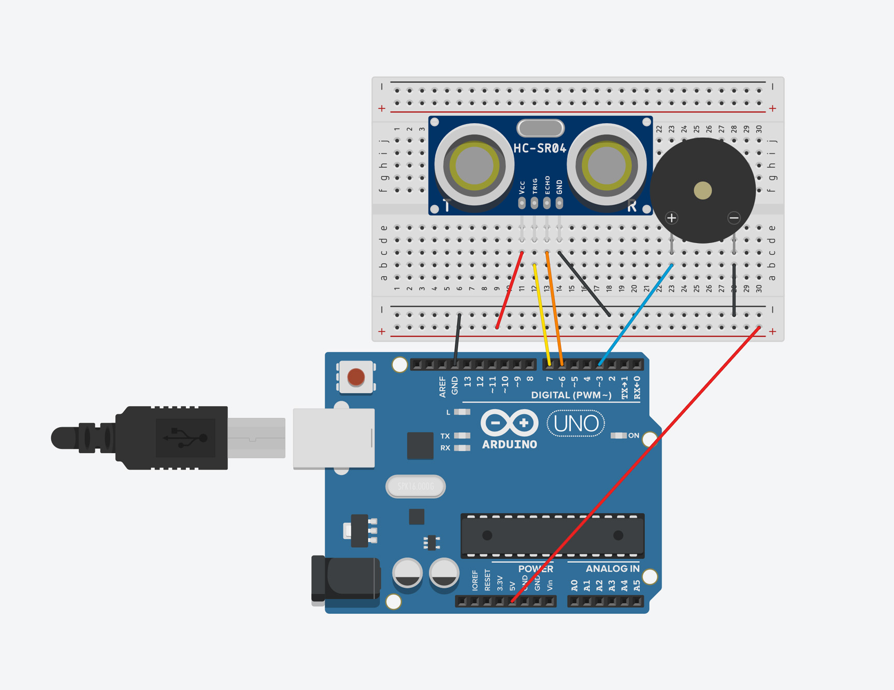
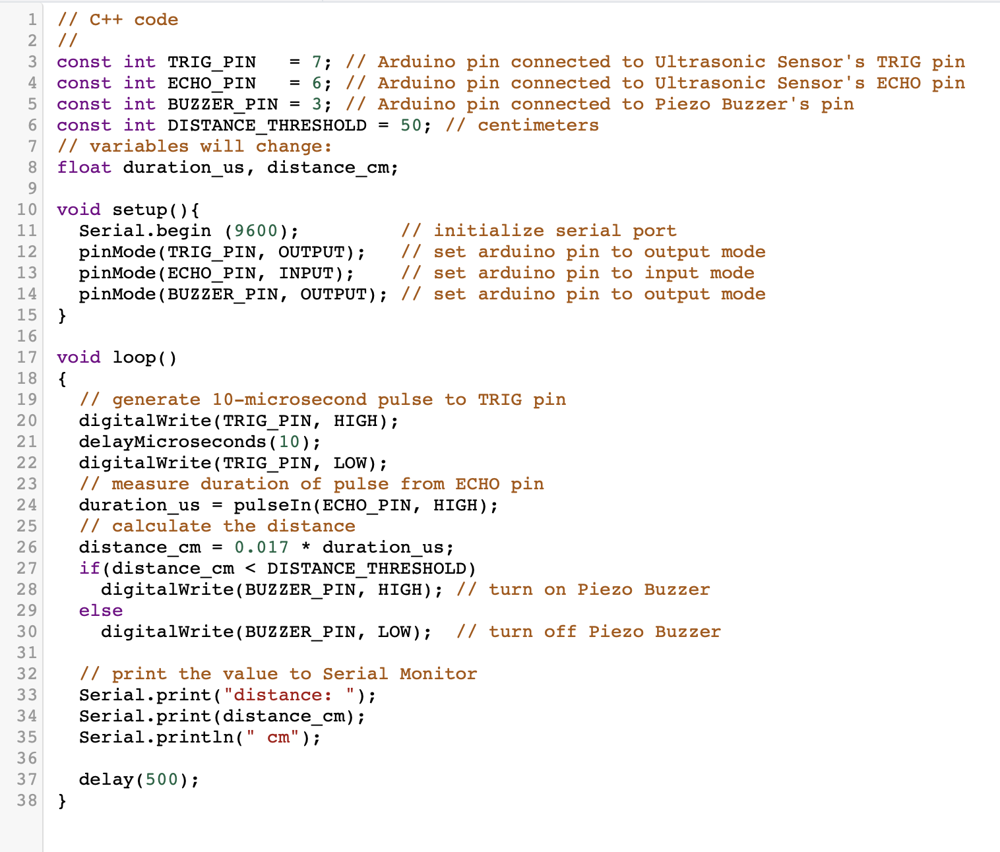

POT LIGHT DIMMER
The first project we worked on in class was called the "Pot Light Dimmer'. This machine uses a potentiometer to control the amount of energy given into the LED, indicated by the brightness of the LED. As the first project, it was still quite confusing in just trying to replicate the layout of the components on the breadboard.
Code Snippet

HEADSPACE ULTRASONIC BUZZER
This second project expands on our skills by making use of more components. Along with the more complicated wire layout, we also made use of the Ultrasonic Distance Sensor and the Piezo. The Sensor would detect if there is an object within the range of the sensor, and the Piezo would then play a loud noise should an object be detected.
Code Snippet
